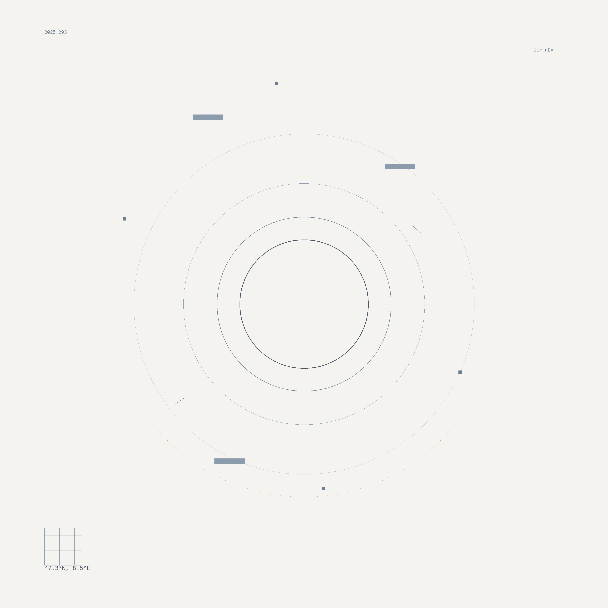

About
This work explores the concept of liminality through mathematical convergence. Concentric circles represent sequences approaching a limit point, embodying the paradox of perpetual becoming.
The piece employs transitional color palettes, minimal clinical typography, and precise geometric markers to suggest systematic observation of threshold states.
3000×3000px / 300 DPI / 2025